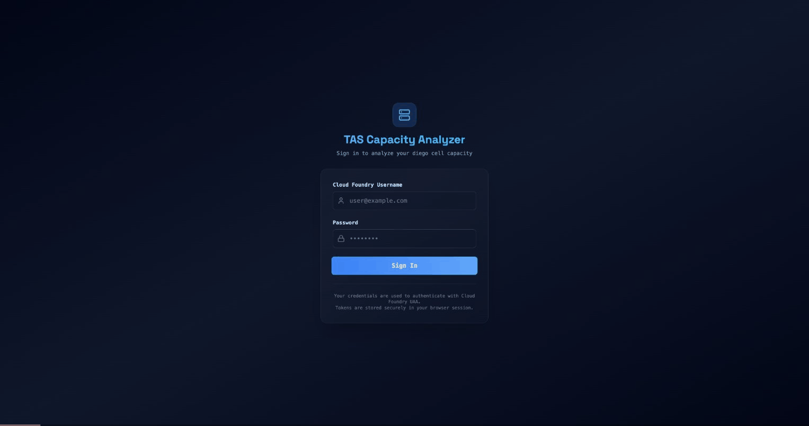

Diego Capacity Analyzer
Capacity planning for TAS, without the spreadsheets
R&D Technical Demo
January 2025
How do you answer
"Will my workloads fit?"
- Manual spreadsheet calculations
Pull data from BOSH, CF, vSphere separately... merge by hand
- N-1 HA math done manually
"If one host fails, do we have capacity?"
- No unified view of constraints
Memory? CPU? Disk? Host count? Which one matters?
- "What-if" = start over from scratch
One dashboard.
Real-time data. Instant modeling.

Let me show you...
How It Works: Data Flow
BOSH Director ──┐
│
CF API ─────────┼──▶ Go Backend ──▶ REST API ──▶ React Frontend
│ │
Log Cache ──────┤ ▼
│ ┌────────────┐
vSphere ────────┘ │ Unified │
│ Capacity │
│ Model │
└────────────┘
Four data sources → One unified view → Real-time calculations
Four APIs, One Unified View
| Source |
What We Get |
How |
| BOSH |
Diego cell VMs + vitals |
UAA OAuth, Director API |
| CF API |
Apps, processes, isolation segments |
OAuth2, /v3 endpoints |
| Log Cache |
Actual memory (not allocated) |
PromQL-style queries |
| vSphere |
Hosts, clusters, VM inventory |
govmomi SDK |
Log Cache gives actual memory, not just allocated—key for accurate planning
Intelligent Capacity Engine
N-1 HA Calculation
"If one host fails, can remaining hosts absorb all workloads?"
Multi-Resource Bottleneck
- Memory utilization
- CPU (with oversubscription)
- Disk capacity
- Host count constraints
Scenario Comparison
Current state vs. proposed changes with delta calculations
Actionable Output
Not just data—
prioritized recommendations
Try It Yourself
Quick Start (no credentials needed)
$ git clone [repo-url]
$ make frontend-dev
→ Load any sample file from the UI
Connect to Real Infrastructure
$ ./generate-env.sh # pulls creds from Ops Manager
$ make backend-run
5 minutes to running with sample data
Feedback Welcome
- What capacity questions do you wrestle with?
- What's missing that would make this useful?
- How would this fit into your workflow?
Questions?